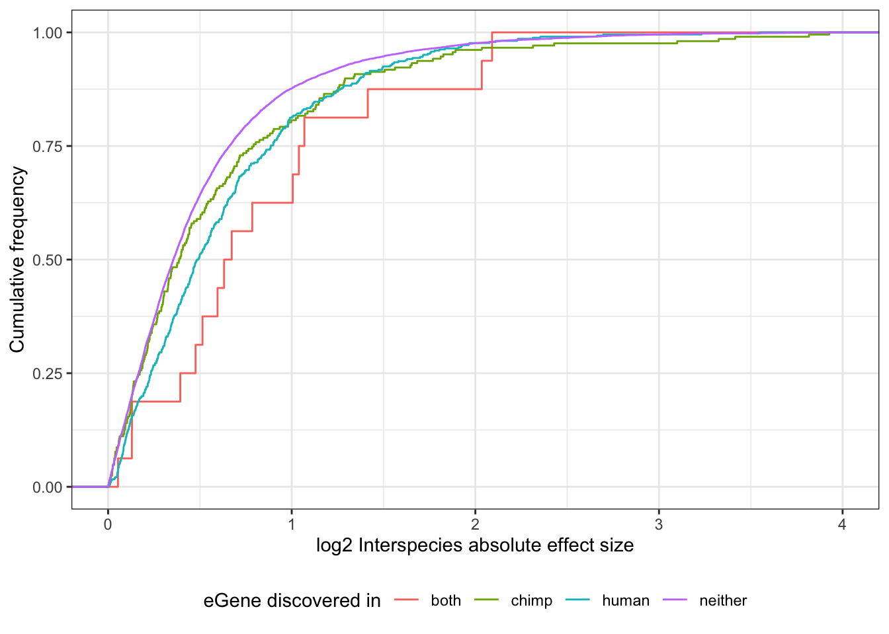
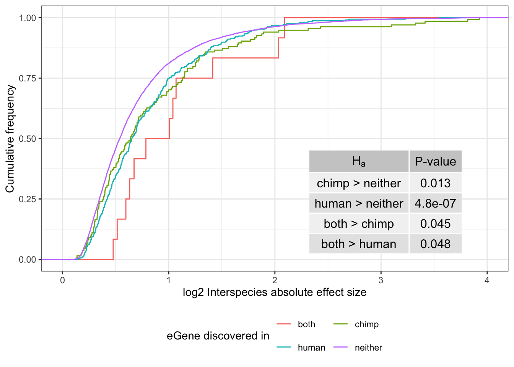
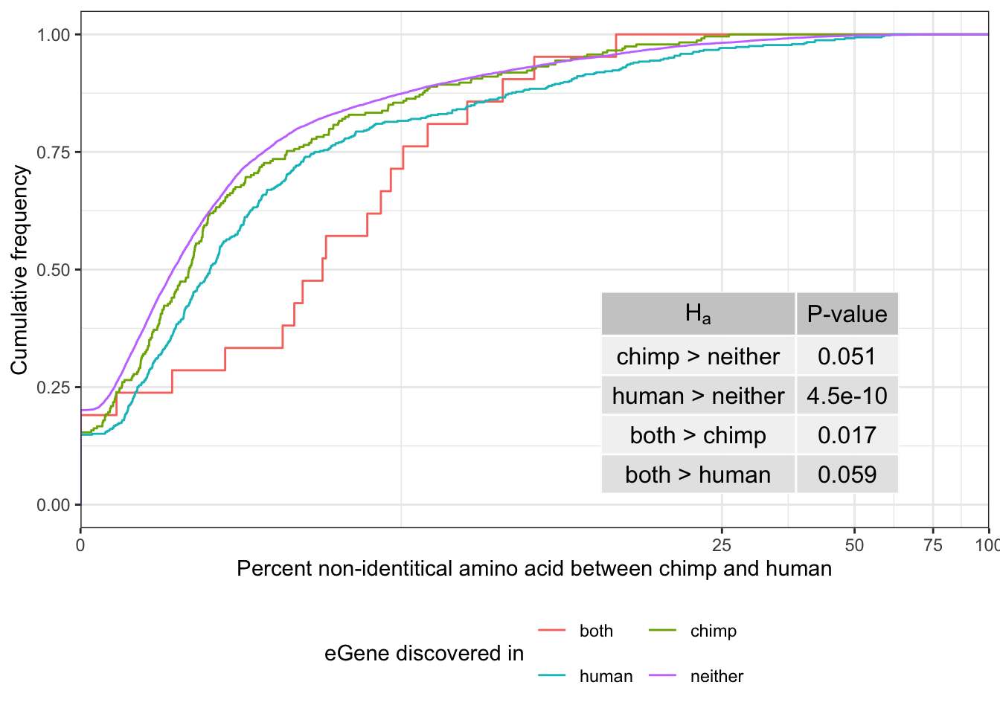
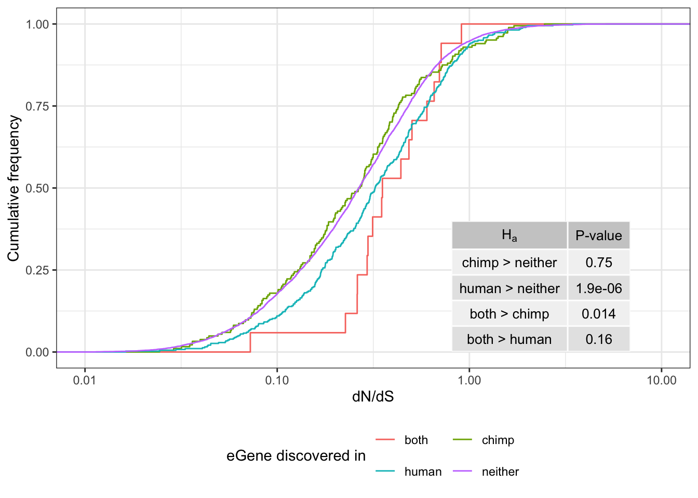
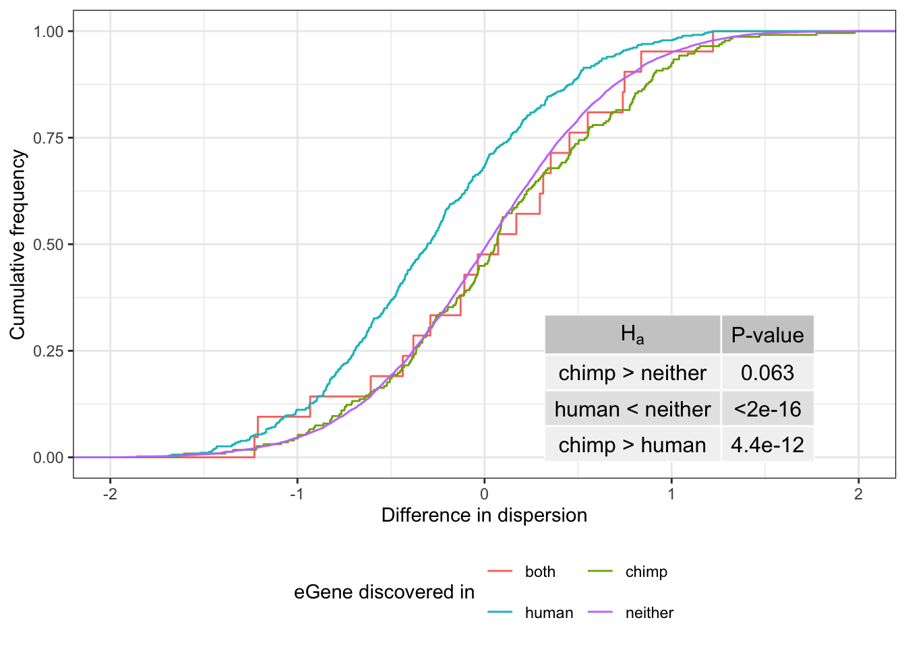

Last updated: 2019-11-14
Checks: 6 1
Knit directory: Comparative_eQTL/analysis/
This reproducible R Markdown analysis was created with workflowr (version 1.4.0). The Checks tab describes the reproducibility checks that were applied when the results were created. The Past versions tab lists the development history.
The R Markdown is untracked by Git. To know which version of the R Markdown file created these results, you’ll want to first commit it to the Git repo. If you’re still working on the analysis, you can ignore this warning. When you’re finished, you can run wflow_publish to commit the R Markdown file and build the HTML.
Great job! The global environment was empty. Objects defined in the global environment can affect the analysis in your R Markdown file in unknown ways. For reproduciblity it’s best to always run the code in an empty environment.
The command set.seed(20190319) was run prior to running the code in the R Markdown file. Setting a seed ensures that any results that rely on randomness, e.g. subsampling or permutations, are reproducible.
Great job! Recording the operating system, R version, and package versions is critical for reproducibility.
Nice! There were no cached chunks for this analysis, so you can be confident that you successfully produced the results during this run.
Great job! Using relative paths to the files within your workflowr project makes it easier to run your code on other machines.
Great! You are using Git for version control. Tracking code development and connecting the code version to the results is critical for reproducibility. The version displayed above was the version of the Git repository at the time these results were generated.
Note that you need to be careful to ensure that all relevant files for the analysis have been committed to Git prior to generating the results (you can use wflow_publish or wflow_git_commit). workflowr only checks the R Markdown file, but you know if there are other scripts or data files that it depends on. Below is the status of the Git repository when the results were generated:
Ignored files:
Ignored: .DS_Store
Ignored: .Rhistory
Ignored: .Rproj.user/
Ignored: analysis/.DS_Store
Ignored: analysis_temp/.DS_Store
Ignored: big_data/
Ignored: code/.DS_Store
Ignored: code/snakemake_workflow/.DS_Store
Ignored: data/.DS_Store
Ignored: data/PastAnalysesDataToKeep/.DS_Store
Ignored: docs/.DS_Store
Ignored: docs/assets/.DS_Store
Ignored: figures/
Untracked files:
Untracked: Untitled/
Untracked: analysis/Final_2_DispersionPlots.Rmd
Untracked: analysis/Final_3_GSEA.Rmd
Untracked: analysis/Final_CumDistPlots.Rmd
Untracked: docs/figure/Final_2_DispersionPlots.Rmd/
Untracked: docs/figure/Final_CumDistPlots.Rmd/
Unstaged changes:
Modified: .gitignore
Deleted: GSEA_eQTL.pdf
Modified: analysis/20191025_FullGtexOverdispEstimates.Rmd
Modified: analysis/20191029_DE_v_dispersion.Rmd
Modified: analysis/20191107_SpecificityVDispersion.Rmd
Modified: analysis_temp/TabulaMuris_analysis2.Rmd
Modified: code/CustomFunctions.R
Note that any generated files, e.g. HTML, png, CSS, etc., are not included in this status report because it is ok for generated content to have uncommitted changes.
There are no past versions. Publish this analysis with wflow_publish() to start tracking its development.
This markdown will be used to generate publication quality figures that I have already made at some point in my exploratory Rmarkdown analyses. This markdown will just make plots that i anticipate for publication that are shown as empricial cdf plots for various unrelated things.
First, load necessary libraries
library(tidyverse)
source("../code/CustomFunctions.R")Load eGene data for humans and chimp.
ChimpOverdispersionTable <- read.table("../output/OverdispersionEstimatesFromChimp.NoLengthNorm.txt", header=T, sep='\t')
EgenesTested <- TsvToCombinedEgenes(Chimp.tsv = "../output/ChimpEgenes.eigenMT.txt.gz", Human.tsv = "../data/GTEX_v8_eGenes/Heart_Left_Ventricle.v8.egenes.txt.gz", SysToID.tsv = "../data/Biomart_export.Hsap.Ptro.orthologs.txt.gz", HumanTsvType = "GTEx")
DE.results <- read.table("../data/DE_genes.NoVirusChallangedInds.txt", sep='\t', header=T)
EgenesTested.grouped <- AddGroups(EgenesTested, HumanEgeneCount=500)Note that plots make come out with odd looking dimensions, that only look better through my experimentation with ggsave that saves the final figure to a file not included in the rendered markdown.
First plot interspecies DE effect size by eGene group. Only save the plot for the ~8000 genes that are significantly DE. (Similar results are obtained if you make the plot for all genes as shown first). eGenes are more likely to be differentially expressed between species. this is even more true for species shared eGenes. All consistent with most neutral selection. Traits that are varied within a species, should be varied between species as well.
DE.results %>% pull(DE) %>% table().
-1 0 1
4338 4337 4417 Plot.Interpecies.DE.byGroup(EgenesTested.grouped, DE.results)$plot
Plot.Interpecies.DE.byGroup(EgenesTested.grouped, DE.results)$PvalTable "H"[a] `P-value`
1 chimp > neither 0.095
2 human > neither 1.7e-10
3 both > chimp 0.033
4 both > human 0.098DE.By.Group <- Plot.Interpecies.DE.byGroup(EgenesTested.grouped, (DE.results %>% filter(DE != 0)))
DE.Fig <- ggdraw(DE.By.Group$plot + guides(color=guide_legend(nrow=2,byrow=TRUE))
) +
draw_grob(tableGrob(DE.By.Group$PvalTable, rows=NULL, theme=ttheme_default(colhead=list(fg_params = list(parse=TRUE)))), x=0.6, y=0.3, width=0.3, height=0.3)
DE.Fig
ggsave("../figures/OriginalArt/eGeneGroup.DE.pdf", DE.Fig, height=120, width=120, units="mm")plot percent identity by eGene group. Hypothesis being that eGenes are genes which are evolving neautrally, so they will have less conservation at coding level (more percent non-identity)
Identity.By.Group <- Plot.PercentNonIdentity.byGroup(EgenesTested.grouped)
Identity.Fig <- ggdraw(Identity.By.Group$plot + guides(color=guide_legend(nrow=2,byrow=TRUE))
) +
draw_grob(tableGrob(Identity.By.Group$PvalTable, rows=NULL, theme=ttheme_default(colhead=list(fg_params = list(parse=TRUE)))), x=0.6, y=0.3, width=0.3, height=0.3)
Identity.Fig
ggsave("../figures/OriginalArt/eGeneGroup.identity.pdf", Identity.Fig, height=120, width=120, units="mm")plot dN/dS ratio by group. Hypothesis being that eGenes are genes which are evolving neautrally, so they will have less conservation at coding level (higher dN/dS)
dNdS.By.Group <- Plot.dNdS.byGroup(EgenesTested.grouped)
dNdS.Fig <- ggdraw(dNdS.By.Group$plot + guides(color=guide_legend(nrow=2,byrow=TRUE))
) +
draw_grob(tableGrob(dNdS.By.Group$PvalTable, rows=NULL, theme=ttheme_default(colhead=list(fg_params = list(parse=TRUE)), base_size = 10)), x=0.65, y=0.3, width=0.25, height=0.25)
dNdS.Fig
ggsave("../figures/OriginalArt/eGeneGroup.dNdS.pdf", dNdS.Fig, height=120, width=120, units="mm")plot difference in dispersion by group. Hypothesis being that chimp eGenes will be more dispersed in chimp, human eGenes will be more dispersed in human, consistent with there being a measurable genetic component to dispersion.
Dispersion.By.Group <-Plot.DispersionDifference.byGroup(EgenesTested.grouped, ChimpOverdispersionTable)
Dispersion.Fig <- ggdraw(Dispersion.By.Group$plot +
guides(color=guide_legend(nrow=2,byrow=TRUE))
) +
draw_grob(tableGrob(Dispersion.By.Group$PvalTable, rows=NULL, theme=ttheme_default(colhead=list(fg_params = list(parse=TRUE)))), x=0.6, y=0.25, width=0.3, height=0.3)
Dispersion.Fig
ggsave("../figures/OriginalArt/eGeneGroup.dispersion.pdf", Dispersion.Fig, height=120, width=120, units="mm")
sessionInfo()R version 3.6.1 (2019-07-05)
Platform: x86_64-apple-darwin15.6.0 (64-bit)
Running under: macOS Catalina 10.15.1
Matrix products: default
BLAS: /Library/Frameworks/R.framework/Versions/3.6/Resources/lib/libRblas.0.dylib
LAPACK: /Library/Frameworks/R.framework/Versions/3.6/Resources/lib/libRlapack.dylib
locale:
[1] en_US.UTF-8/en_US.UTF-8/en_US.UTF-8/C/en_US.UTF-8/en_US.UTF-8
attached base packages:
[1] stats graphics grDevices utils datasets methods base
other attached packages:
[1] cowplot_1.0.0 gridExtra_2.3 edgeR_3.26.8 limma_3.40.6
[5] MASS_7.3-51.4 forcats_0.4.0 stringr_1.4.0 dplyr_0.8.3
[9] purrr_0.3.3 readr_1.3.1 tidyr_1.0.0 tibble_2.1.3
[13] ggplot2_3.2.1 tidyverse_1.2.1
loaded via a namespace (and not attached):
[1] locfit_1.5-9.1 tidyselect_0.2.5 xfun_0.10 haven_2.1.1
[5] lattice_0.20-38 colorspace_1.4-1 vctrs_0.2.0 generics_0.0.2
[9] htmltools_0.4.0 yaml_2.2.0 rlang_0.4.1 pillar_1.4.2
[13] glue_1.3.1 withr_2.1.2 modelr_0.1.5 readxl_1.3.1
[17] lifecycle_0.1.0 munsell_0.5.0 gtable_0.3.0 workflowr_1.4.0
[21] cellranger_1.1.0 rvest_0.3.4 evaluate_0.14 labeling_0.3
[25] knitr_1.25 broom_0.5.2 Rcpp_1.0.2 scales_1.0.0
[29] backports_1.1.5 jsonlite_1.6 fs_1.3.1 hms_0.5.1
[33] digest_0.6.22 stringi_1.4.3 grid_3.6.1 rprojroot_1.3-2
[37] cli_1.1.0 tools_3.6.1 magrittr_1.5 lazyeval_0.2.2
[41] crayon_1.3.4 pkgconfig_2.0.3 zeallot_0.1.0 xml2_1.2.2
[45] lubridate_1.7.4 assertthat_0.2.1 rmarkdown_1.16 httr_1.4.1
[49] rstudioapi_0.10 R6_2.4.0 nlme_3.1-141 git2r_0.26.1
[53] compiler_3.6.1